Hypothesis Testing
Introduction
Organization
- 15h of lectures, 18h of TD
- \(12^{th}\) may: Exam (2h)
- Lecture notes and slides on the website
- About english and programming languages
- Wooclap sessions [Test]
Objective
- Given a general decision problem
- Introduce precise notations to describe the pb
- formulate mathematically hypotheses \(H_0\) (a priori) and \(H_1\) (alternative)
- Choose a statistic adapted to the problem
- Compute this statistic and its pvalue (or an approx.)
- Conclude and make a decision
General Principles
- Fix an objective: test whether Bob has diabetes
- Design an experiment: measure of glucose level
- Define hypotheses
- Null hypothesis: \(H_0\): a priori, Bob has no diabetes
- Alternative hypothesis: \(H_1\): Bob has diabete
- Define a decision dule: function of the glucose level
- Collect Data: do the measure of glucose level
- Apply the decision rule: reject \(H_0\) or not
- Draw a conclusion: should Bob follow a treatment or make other tests ?
Good and Bad Decisions
| Decision | \(H_0\) True | \(H_1\) True |
|---|---|---|
| \(T=0\) | True Negative (TN) |
False Negative (FN)
|
| \(T=1\) |
False Positive (FP)
|
True Positive (TP) |
Dice Biased Toward \(6\)
- Objective: test if Bob is cheating with a dice.
- Experiment: Bob rolls the dice \(10\) times.
- Hypotheses:
- \(H_0\): the probability of getting \(6\) is \(1/6\)
- \(H_1\): the probability of getting \(6\) is larger than \(1/6\)
- Decision rule: the probability of getting a number of \(6\) at least equal to the number of observed \(6\) is \(< 0.05\)
- Data: the dice falls \(10\) times on \(6\)
- Decision: the probability is \(1/6^{10} < 0.05\)
- Conclusion?
Fairness of Dice
- We observe \((X_1, \dots, X_n)\) iid where \(X_i \in \{1, \dots, 6\}\) where each \(\mathbb P(X_i = k) = p_k\)
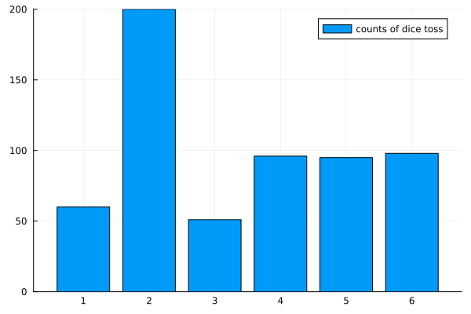
- \(H_0: p_6 = 1/6\) VS \(H_1: p_6 > 1/6\)
- Do not reject \(H_0\) (\(H_0\) is “likely”)
- \(H_0: (p_1=\dots=p_6 = 1/6)\) (dice is fair) VS \(H_1: \exists k: p_k > 1/6\)
- Reject \(H_1\) (\(H_1\) is “unlikely”)
Medical Test
- Objective: test if a fetus has Down syndrome
- Experiment: measure the Nucal translucency
- Hypotheses:
- \(H_0\): nucal translucency is normal \(\sim \mathcal N(1.5,0.8)\)
- \(H_1\): nucal translucency is large
- Decision rule: reject if \(P_0(X \geq x_{obs}) \leq 0.05\)
- Collect data: \(x_{obs}=3.02\)
- Make a decision: calculate the value of \(P_0(X \geq 3.02)=0.029\)
- Conclusion ?
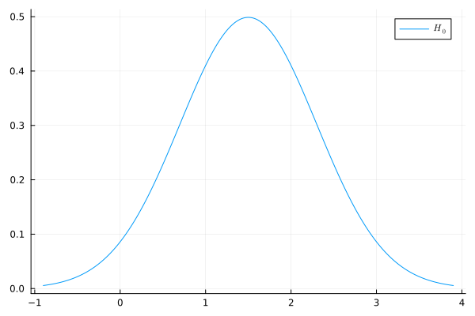
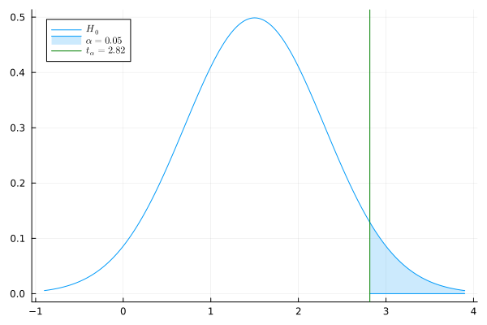
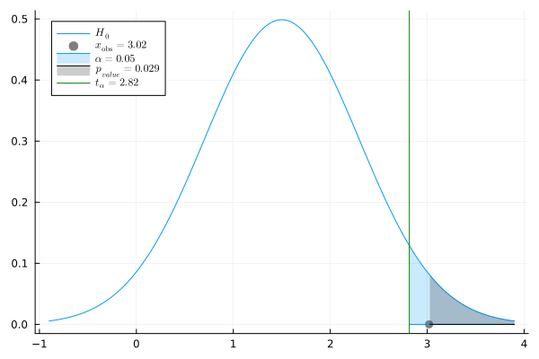
Probability Basics
Recall of Proba
Consider a probability measure \(P\) on \(\mathbb R\).
- CDF (Cumulative Distribution Function): \[x \to P(~(-\infty,x]~) = \mathbb P(X \leq x) ~~~~\text{(if $X \sim P$ under $\mathbb P$)}\]
Continous Measures
density wrp to Lebesgue: \(\mathbb P(X\in[x,x+dx])=dP(x) = p(x)dx\)
PDF (Proba Density Function): \(x \to p(x)\)
CDF: \(x \to \int_{\infty}^x p(x')dx'\)
\(\alpha\)-quantile \(q_{\alpha}\): \(\int_{\infty}^{q_{\alpha}} p(x)dx = \alpha\)
or \(\mathbb P(X \leq q_{\alpha}) = \alpha\)
Discrete Measures
- density wrp to counting measure: \(\mathbb P(X=x) = P(\{x\})=p(x)\)
- CDF: \(x \to \sum_{x' \leq x} p(x')dx'\)
- \(\alpha\)-quantile \(q_{\alpha}\): \[\inf_{q \in \mathbb R}\{q:~\sum_{x_i \leq q}p(x_i) > \alpha\}\]
Examples
- Gaussian \(\mathcal N(\mu,\sigma)\): \[p(x) = \frac{1}{\sqrt{2\pi \sigma^2}}e^{-\frac{(x-\mu)^2}{2\sigma^2}}\]
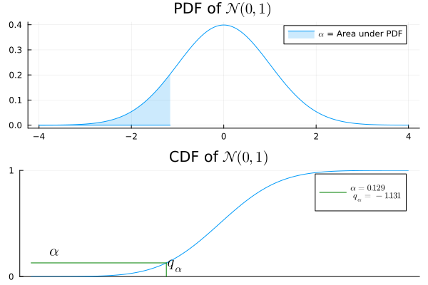
- Approximation of sum of iid RV (TCL)
- Binomial \(\mathrm{Bin}(n,q)\): \[p(x)= \binom{n}{x}q^x (1-q)^{n-x}\]
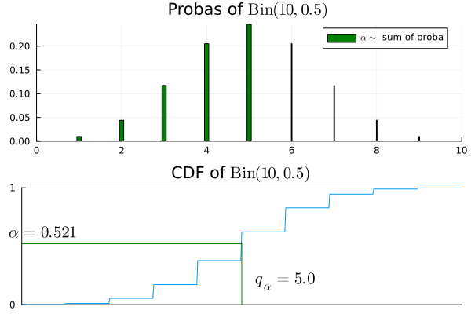
- Number of success among \(n\) Bernoulli \(q\)
Examples
- Exponential \(\mathcal E(\lambda)\): \[p(x) = \lambda e^{-\lambda x}\]
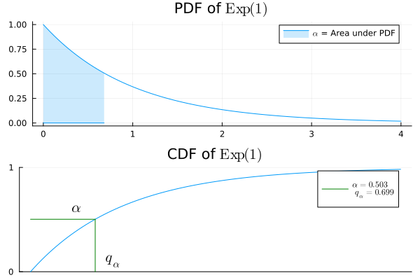
- Waiting time for an atomic clock of rate \(\lambda\)
- Geometric \(\mathcal{G}(q)\): \[p(x)= q(1-q)^{x-1}\]
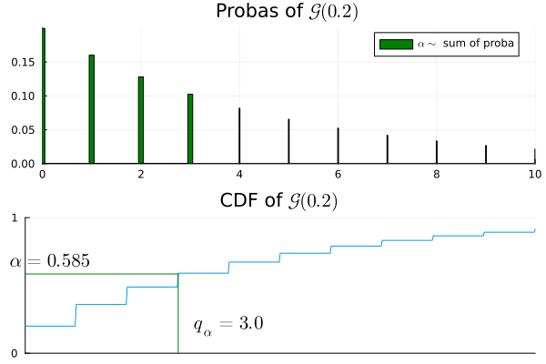
- Index of first success for iid Bernoulli \(q\)
Examples Gamma/Poisson
- Gamma \(\Gamma(k, \lambda)\): \[p(x) = \frac{\lambda^k x^{k-1}e^{-\lambda x}}{(k-1)!}\]
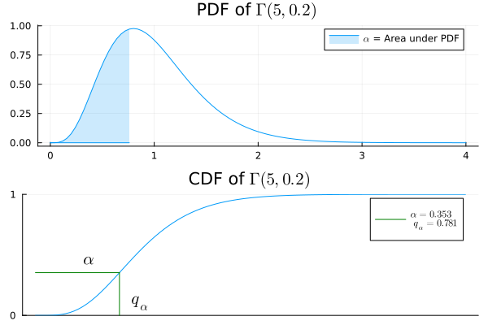
- Waiting time for \(k\) atomic clocks of rate \(\lambda\)
- Poisson \(\mathcal{P}(\lambda)\): \[p(x)=\frac{\lambda^x}{x!}e^{-\lambda}\]
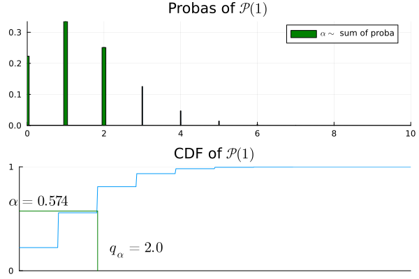
- Numb. of tics before time \(1\) of clock \(\lambda\)
Basics of Hypothesis Testing
Estimation VS Test
- We observe some data \(X\) in a measurable space \((\mathcal X, \mathcal A)\).
- Example \(\mathcal X = \mathbb R^n\): \(X= (X_1, \dots, X_n)\).
Estimation
- One set of distributions \(\mathcal P\)
- Parameterized by \(\Theta\) \[ \mathcal P = \{P_{\theta},~ \theta \in \Theta\} \; . \]
- \(\exists \theta \in \Theta\) such that \(X \sim P_{\theta}\)
Goal: estimate a given function of \(P_{\theta}\), e.g.:
- \(F(P_{\theta}) = \int x dP_{\theta}\)
- \(F(P_{\theta}) = \int x^2 dP_{\theta}\)
Test
Two sets of distributions \(\mathcal P_0\), \(\mathcal P_1\)
Parameterized by disjoints \(\Theta_0\), \(\Theta_1\) \[ \begin{aligned} \mathcal P_0 = \{P_{\theta} : \theta \in \Theta_0\}, ~~~~ \mathcal P_1 = \{P_{\theta} : \theta \in \Theta_1\}\; . \end{aligned} \]
\(\exists \theta \in \Theta_0 \cup \Theta_1\) such that \(X \sim P_{\theta}\)
Goal: decide between \[H_0: \theta \in \Theta_0 \text{ or } H_1: \theta \in \Theta_1\]
Estimation
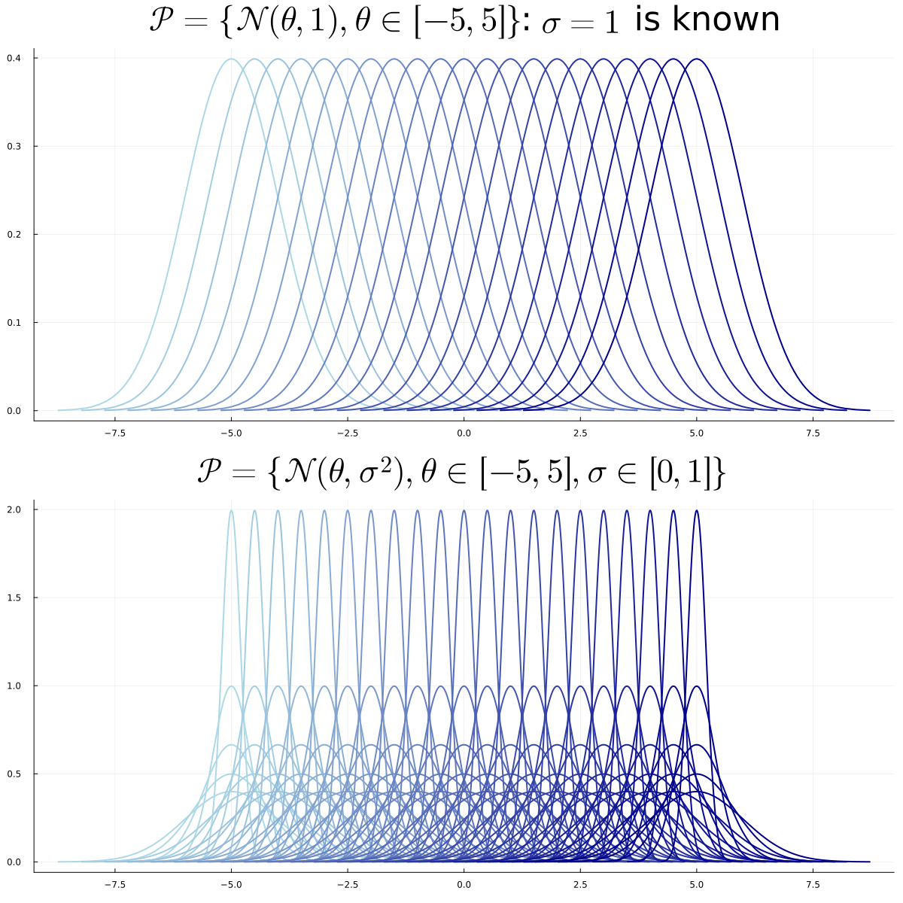
Test
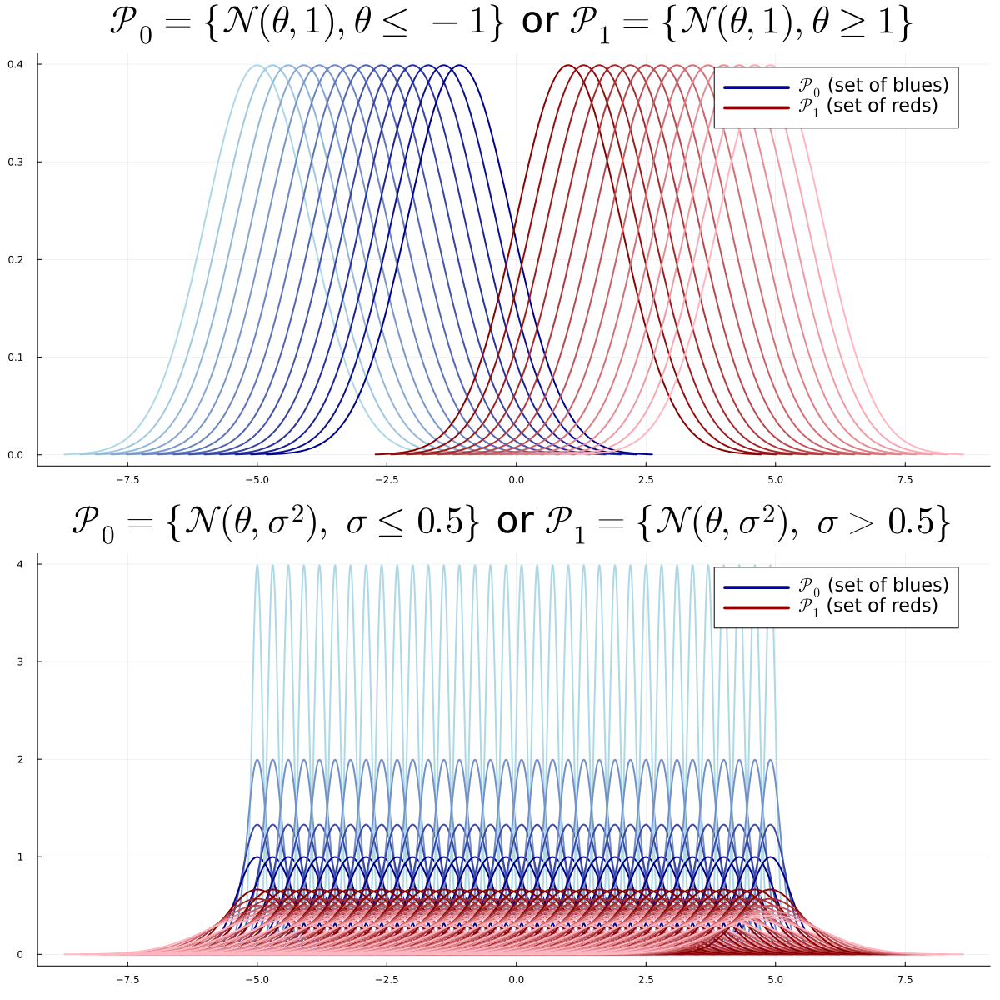
Problems
- Simple VS Simple:\[\Theta_0 = \{\theta_0\} \text{ and } \Theta_1 = \{\theta_1\}\]
- Simple VS Multiple:\[\Theta_0 = \{\theta_0\}\]
- Else: Multiple VS Multiple
Test Model
Two sets of distributions \(\mathcal P_0\), \(\mathcal P_1\)
Parameterized by disjoints \(\Theta_0\), \(\Theta_1\) \[ \begin{aligned} \mathcal P_0 = \{P_{\theta} : \theta \in \Theta_1\}, ~~~~ \mathcal P_1 = \{P_{\theta} : \theta \in \Theta_1\}\; . \end{aligned} \]
\(\exists \theta \in \Theta_0 \cup \Theta_1\) such that \(X \sim P_{\theta}\)
Goal: decide between \[H_0: \theta \in \Theta_0 \text{ or } H_1: \theta \in \Theta_1\]
Simple VS Simple
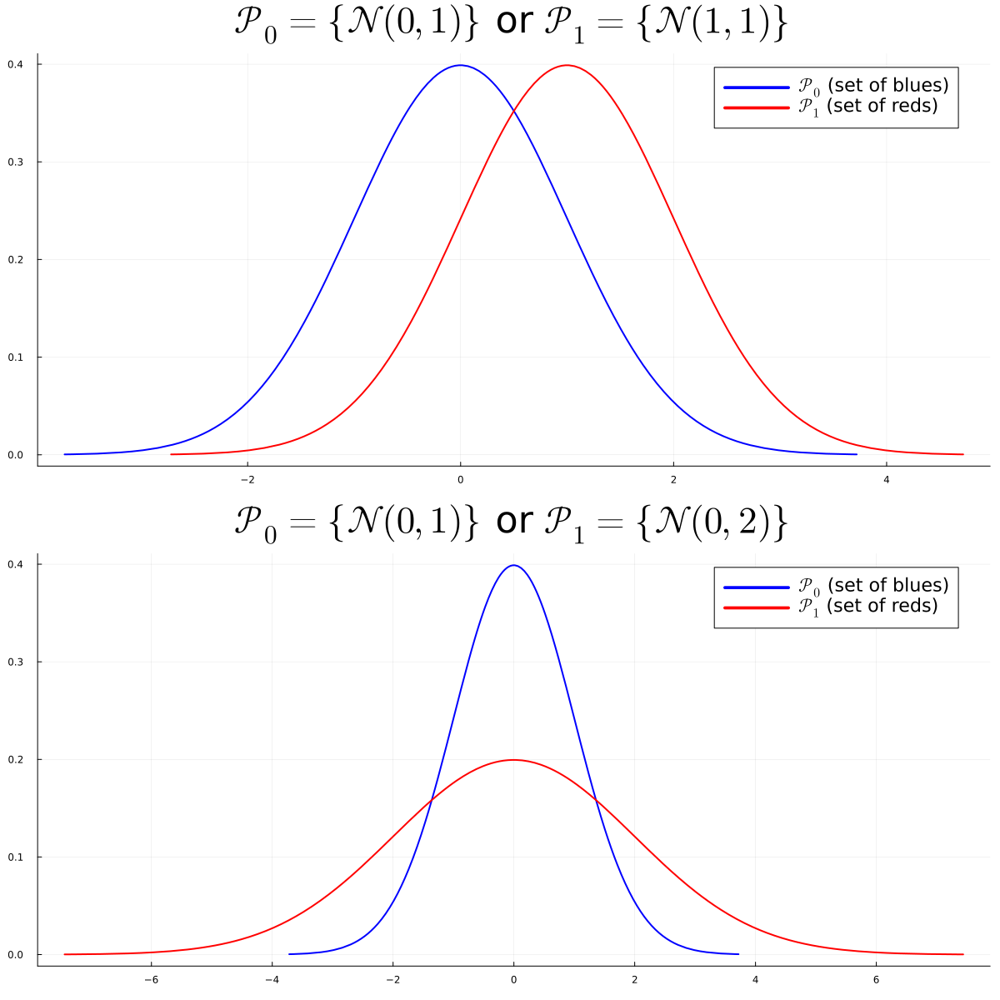
Multiple VS Multiple
Parametric VS Non-Parametric
- parametric: \(\Theta_0\) and \(\Theta_1\) included in subspaces of finite dimension.
- non-parametric: Otherwise
Example of Multiple VS Multiple Parametric Problem:
- \(H_0: X \sim \mathcal N(\theta,\sigma)\), unknown \(\theta < 0\) and unknown \(\sigma > 0\): \(\Theta_0 \subset \mathbb R^2\)
- \(H_1: X \sim \mathcal N(\theta,\sigma)\), unknown \(\theta > 0\) and unknown \(\sigma > 0\): \(\Theta_1 \subset \mathbb R^2\)
Decision Rule and Test Statistic
A Decision Rule or Test \(T\) is a measurable function from \(\mathcal X\) to \(\{0,1\}\): \[ T : \mathcal X \to \{0,1\}\; .\]
It can depend on the sets \(\mathcal P_0\) and \(\mathcal P_1\)
but not on any unknown parameter.
\(T(x) = 0\) (or \(1\)) for all \(x\) is the trivial decision rule. Question: Decision Rule
a Test Statistic \(\psi\) is a measurable function from \(\mathcal X\) to \(\mathbb R\): \[ \psi : \mathcal X \to \mathbb R\; .\]
It can depend on the sets \(\mathcal P_0\) and \(\mathcal P_1\)
but not on any unknown parameter. Question: Test Statistic
Rejection Region
- For a given test \(T\), the rejection region \(\mathcal R \subset \mathbb R\) is the set \[\{\psi(x) \in \mathbb R:~ T(x)=1\} \; .\]
- Example of \(\mathcal R\), for a given threshold \(t>0\), \[ \begin{aligned} T(x) &= \mathbf{1}\{\psi(x) > t\}:~~~~~~\mathcal R = (t,+\infty)\\ T(x) &= \mathbf{1}\{\psi(x) < t\}:~~~~~~\mathcal R = (-\infty,t)\\ T(x) &= \mathbf{1}\{|\psi(x)| > t\}:~~~~~~\mathcal R = (-\infty,t)\cup (t, +\infty)\\ T(x) &= \mathbf{1}\{\psi(x) \not \in [t_1, t_2]\}:~~~~~~\mathcal R = (-\infty,t_1)\cup (t_2, +\infty)\; \end{aligned} \]
Simple VS Simple
Simple VS Simple Problem
- We observe \(X \in \mathcal X=\mathbb R^n\).
- \(H_0: X \sim P\) or \(H_1: X \sim Q\).
- We know \(P\) and \(Q\) but we do not know whether \(X \sim P\) or \(X \sim Q\)
For a given test \(T\) we define:
- level of \(T\): \(\alpha = P(T(X)=1)\) (also: type-1 error)
- power of \(T\): \(\beta = Q(T(X)=1) = 1-Q(T(X)=0)\) (1-\(\beta\) is the type-2 error)
| Decision | \(H_0: X \sim P\) | \(H_1: X \sim Q\) |
|---|---|---|
| \(T=0\) | \(1-\alpha\) | \(1-\beta\) |
| \(T=1\) | \(\alpha\) | \(\beta\) |
- unbiased: \(\beta \geq \alpha\)
- \(\alpha = 0\) for trivial test \(T(x)=0\) ! But \(\beta =0\) too…
Likelihood Ratio Test
Test \(T\) that maximizes \(\beta\) at fixed \(\alpha\) ?
Idea: Consider the likelihood ratio test statistic \[\psi(x)=\frac{dQ}{dP}(x) = \frac{q(x)}{p(x)}\]
We consider the likelihood ratio test \[ T^*(x)=\mathbf 1\left\{\frac{q(x)}{p(x)} > t_{\alpha}\right\} \;\]
\(t_{\alpha}\) is the \(\alpha\)-quantile of the distrib \(\frac{q(X)}{p(X)}\) if \(X\sim P\) \[ \mathbb P_{X \sim P}\left(\frac{q(X)}{p(X)} > t_{\alpha}\right) = \alpha\]
- We observe \(X \in \mathcal X=\mathbb R^n\).
- \(H_0: X \sim P\) or \(H_1: X \sim Q\).
- We know \(P\) and \(Q\) but we do not know whether \(X \sim P\) or \(X \sim Q\)
| Decision | \(H_0: X \sim P\) | \(H_1: X \sim Q\) |
|---|---|---|
| \(T=0\) | \(1-\alpha\) | \(1-\beta\) |
| \(T=1\) | \(\alpha\) | \(\beta\) |
- unbiased: \(\beta > \alpha\)
- \(\alpha = 0\) for trivial test \(T(x)=0\) !
- But \(\beta =0\) too…
Neyman Pearson’s Theorem
The likelihood Ratio Test of level \(\alpha\) maximizes the power among all tests of level \(\alpha\).
- Example: \(X \sim \mathcal N(\theta, 1)\).
- \(H_0: \theta=\theta_0\), \(H_1: \theta=\theta_1\).
- Check that the log-likelihood ratio is \[ (\theta_1 - \theta_0)x + \frac{\theta_0^2 -\theta_1^2}{2} \; .\]
- If \(\theta_1 > \theta_0\), an optimal test if of the form \[ T(x) = \mathbf 1\{ x > t \} \; .\]
| Decision | \(H_0: X \sim P\) | \(H_1: X \sim Q\) |
|---|---|---|
| \(T=0\) | \(1-\alpha\) | \(1-\beta\) |
| \(T=1\) | \(\alpha\) | \(\beta\) |
\[ T^*(x)=\mathbf 1\left\{\frac{q(x)}{p(x)} > t_{\alpha}\right\} \;\]
Where, if \(X\sim P\), \[ P(T^*(X)=1)=\mathbb P_{X \sim P}\left(\frac{q(X)}{p(X)} > t_{\alpha}\right) = \alpha\]
Equivalent to Log-Likelihood Ratio Test: \[T^*(x)=\mathbf 1\left\{\log\left(\frac{q(x)}{p(x)}\right) > \log(t_{\alpha})\right\}\]
Example with Gaussians
Let \(P_{\theta}\) be the distribution \(\mathcal N(\theta,1)\).
Observe \(n\) iid data \(X = (X_1, \dots, X_n)\)
\(H_0: X \sim P^{\otimes n}_{\theta_0}\) or \(H_1: X \sim P^{\otimes n}_{\theta_1}\)
Remark: \(P^{\otimes n}_{\theta}= \mathcal N((\theta,\dots, \theta), I_n)\)
Density of \(P^{\otimes n}_{\theta}\):
\[ \begin{aligned} \frac{d P^{\otimes n}_{\theta}}{dx} &= \frac{d P_{\theta}}{dx_1}\dots\frac{d P_{\theta}}{dx_n} \\ &= \frac{1}{\sqrt{2\pi}^n}\exp\left({-\sum_{i=1}^n\frac{(x_i - \theta)^2}{2}}\right) \\ &= \frac{1}{\sqrt{2\pi}^n}\exp\left(-\frac{\|x\|^2}{2} + n\theta \overline x - \frac{\theta^2}{2}\right)\; . \end{aligned} \]
Log-Likelihood Ratio Test:
\(T(x) = \mathbf 1\{\overline x > t_{\alpha}\}\) if \(\theta_1 > \theta_0\)
\(T(x) = \mathbf 1\{\overline x < t_{\alpha}\}\) otherwise
Generalization: Exponential Families
A set of distributions \(\{P_{\theta}\}\) is an exponential family if each density \(p_{\theta}(x)\) is of the form \[ p_{\theta}(x) = a(\theta)b(x) \exp(c(\theta)d(x)) \; , \]
We observe \(X = (X_1, \dots, X_n)\). Consider the following testing problem: \[H_0: X \sim P_{\theta_0}^{\otimes n}~~~~ \text{or}~~~~ H_1:X \sim P_{\theta_1}^{\otimes n} \; .\]
Likelihood Ratio: \[ \frac{dP^{\otimes n}_{\theta_1}}{dP^{\otimes n}_{\theta_0}} = \left(\frac{a(\theta_1)}{a(\theta_0)}\right)^n\exp\left((c(\theta_1)-c(\theta_0))\sum_{i=1}^n d(x_i)\right) \; . \]
Likelihood Ratio Test: (Q: Select Exp. Families) \[ T(X) = \mathbf 1\left\{\frac{1}{n}\sum_{i=1}^n d(X_i) > t\right\} \;. ~~~~\text{(calibrate $t$)}\]
Example: Radioactive Source
The number of particle emitted in \(1\) unit of time is follows distribution \(P \sim \mathcal P(\lambda)\).
We observe \(20\) time units, that is \(N \sim \mathcal P(20\lambda)\).
Type A sources emit an average of \(\lambda_0 = 0.6\) particles/time unit
Type B sources emit an average of \(\lambda_1 = 0.8\) particles/time unit
\(H_0\): \(N \sim \mathcal P(20\lambda_0)\) or \(H_1\): \(N\sim \mathcal P(20\lambda_1)\)
Likelihood Ratio Test: \[T(X)=\mathbf 1\left\{\sum_{i=1}^{20}X_i > t_{\alpha}\right\} \; .\]
\(t_{0.95}\):
quantile(Poisson(20*0.6), 0.95)gives \(18\)
\(\mathbb P(\mathcal P(20*0.6) > 17)\):
1-cdf(Poisson(20*0.6), 17)gives \(0.063\)
\(\mathbb P(\mathcal P(20*0.6) > 18)\):
1-cdf(Poisson(20*0.6), 18)gives \(0.038\): Reject if \(N \geq 19\)
Multiple-Multiple Tests
Definitions
- \(H_0 = \mathcal P_0=\{P_{\theta}, \theta \in \Theta_0 \}\) is not a singleton
- No meaning of \(\mathbb P_{H_0}(X \in A)\)
- level of \(T\): \[ \alpha = \sup_{\theta \in \Theta_0}P_{\theta}(T(X)=1) \; . \]
- power function \(\beta: \Theta_1 \to [0,1]\) \[ \beta(\theta) = P_{\theta}(T(X)=1) \]
- \(T\) is unbiased if \(\beta (\theta) \geq \alpha\) for all \(\theta \in \Theta_1\).
- If \(T_1\), \(T_2\) are two tests of level \(\alpha_1\), \(\alpha_2\)
- \(T_2\) is uniformly more powerfull (\(UMP\)) than \(T_1\) if
- \(\alpha_2 \leq \alpha_1\)
- \(\beta_2(\theta) \geq \beta_1(\theta)\) for all \(\theta \in \Theta_1\)
- \(T^*\) is \(UMP_{\alpha}\) if it is \(UMP\) than any other test \(T\) of level \(\alpha\).
Multiple-Multiple Tests in \(\mathbb R\)
Assumption: \(\Theta_0 \cup \Theta_1 \subset \mathbb R\).
One-tailed tests: \[ \begin{aligned} H_0: \theta \leq \theta_0 ~~~~ &\text{ or } ~~~ H_1: \theta > \theta_0 ~~~ \text{(right-tailed: unilatéral droit)}\\ H_0: \theta \geq \theta_0 ~~~ &\text{ or } ~~~ H_1: \theta < \theta_0 ~~~ \text{(left-tailed: unilatéral gauche)} \end{aligned} \]
Two-tailed tests: \[ \begin{aligned} H_0: \theta = \theta_0 ~~~ &\text{ or } ~~~ H_1: \theta \neq \theta_0 ~~~ \text{(simple/multiple)}\\ H_0: \theta \in [\theta_1, \theta_2] ~~~ &\text{ or } ~~~ H_1: \theta \not \in [\theta_1, \theta_2] ~~~ \text{( multiple/multiple)} \end{aligned} \]
- Assume that \(p_{\theta}(x) = a(\theta)b(x)\exp(c(\theta)d(x))\) and that \(c\) is a non-decreasing (croissante) function, and consider a one-tailed test problem.
- There exists a UMP\(\alpha\) test. It is \(\mathbf 1\{\sum d(X_i) > t \}\) if \(H_1: \theta > \theta_0\) (right-tailed test).
Pivotal Test Statistic and P-value
- Here, \(\Theta_0\) is not necessarily a singleton. \(\mathbb P_{H_0}(X \in A)\) has no meaning.
\(\psi: \mathcal X \to \mathbb R\) is pivotal if the distribution of \(\psi(X)\) under \(H_0\) does not depend on \(\theta \in \Theta_0\):
for any \(\theta, \theta' \in \Theta_0\), and any event \(A\), \[ \mathbb P_{\theta}(\psi(X) \in A) = \mathbb P_{\theta'}(\psi(X) \in A) \; .\]
- Example: If \(X=(X_1, \dots, X_n)\) are iid \(\mathcal N(0, \sigma)\), the distrib of \[ \psi(X) = \frac{\sum_{i=1}^n \overline X}{\sqrt{\sum_{i=1}^n X_i^2}}\] does not depend on \(\sigma\).
Pivotal Test Statistic and P-value
We define \(p_{value}(x_{\mathrm{obs}}) =\mathbb P(\psi(X) \geq x_{\mathrm{obs}})\) for a right-tailed test.
For a two-tailed test, \(p_{value}(x_{\mathrm{obs}}) =2\min(\mathbb P(\psi(X) \geq x_{\mathrm{obs}}),\mathbb P(\psi(X) \leq x_{\mathrm{obs}}))\)
Under \(H_0\), for a pivotal test statistic \(\psi\), \(p_{value}(X)\) has a uniform distribution \(\mathcal U([0,1])\).
- In practice: reject if \(p_{value}(x_{\mathrm{obs}}) \leq \alpha = 0.05\)
- \(\alpha\) is the level or type-1-error of the test
- Illustration if \(\psi(X) \sim \mathcal N(0,1)\): 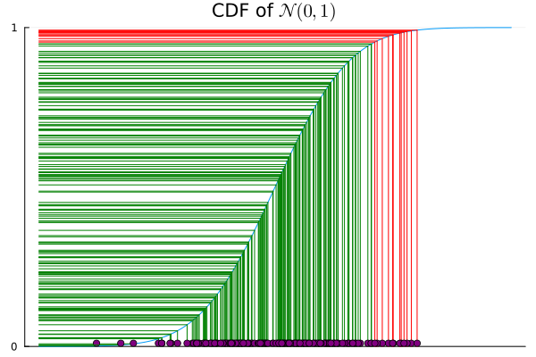